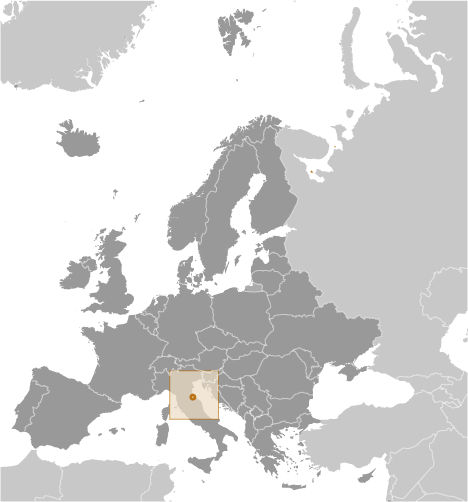
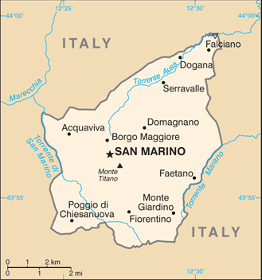
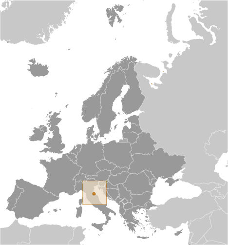
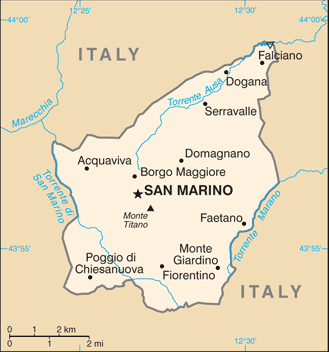

-
Introduction :: San Marino
-
Background:Geographically the third smallest state in Europe (after the Holy See and Monaco), San Marino also claims to be the world's oldest republic. According to tradition, it was founded by a Christian stonemason named MARINUS in A.D. 301. San Marino's foreign policy is aligned with that of the EU, although it is not a member; social and political trends in the republic track closely with those of its larger neighbor, Italy.
-
Geography :: San Marino
-
Location:Southern Europe, an enclave in central ItalyGeographic coordinates:43 46 N, 12 25 EMap references:EuropeArea:total: 61 sq kmland: 61 sq kmwater: 0 sq kmcountry comparison to the world: 229Area - comparative:about one-third the size of Washington, DCLand boundaries:total: 37 kmborder countries (1): Italy 37 kmCoastline:0 km (landlocked)Maritime claims:none (landlocked)Climate:Mediterranean; mild to cool winters; warm, sunny summersTerrain:rugged mountainsElevation:55 m lowest point: Torrente Ausa739 highest point: Monte TitanoNatural resources:building stoneLand use:agricultural land: 16.7% (2011 est.)arable land: 16.7% (2011 est.) / permanent crops: 0% (2011 est.) / permanent pasture: 0% (2011 est.)forest: 0% (2011 est.)other: 83.3% (2011 est.)Irrigated land:0 sq km (2012)Natural hazards:occasional earthquakesEnvironment - current issues:air pollution; urbanization decreasing rural farmlands; water shortageEnvironment - international agreements:party to: Biodiversity, Climate Change, Desertification, Whalingsigned, but not ratified: Air PollutionGeography - note:landlocked; an enclave of (completely surrounded by) Italy; smallest independent state in Europe after the Holy See and Monaco; dominated by the Apennine Mountains
-
People and Society :: San Marino
-
Population:33,779 (July 2018 est.)country comparison to the world: 215Nationality:noun: Sammarinese (singular and plural)adjective: SammarineseEthnic groups:Sammarinese, ItalianLanguages:ItalianReligions:Roman CatholicAge structure:0-14 years: 15.04% (male 2,687 /female 2,392)15-24 years: 11.59% (male 2,046 /female 1,869)25-54 years: 40.23% (male 6,391 /female 7,198)55-64 years: 13.35% (male 2,215 /female 2,294)65 years and over: 19.8% (male 3,006 /female 3,681) (2018 est.)population pyramid:
 The World Factbook Field Image ModalEurope :: San Marino Print
The World Factbook Field Image ModalEurope :: San Marino Print Image DescriptionThis is the population pyramid for San Marino. A population pyramid illustrates the age and sex structure of a country's population and may provide insights about political and social stability, as well as economic development. The population is distributed along the horizontal axis, with males shown on the left and females on the right. The male and female populations are broken down into 5-year age groups represented as horizontal bars along the vertical axis, with the youngest age groups at the bottom and the oldest at the top. The shape of the population pyramid gradually evolves over time based on fertility, mortality, and international migration trends.
Image DescriptionThis is the population pyramid for San Marino. A population pyramid illustrates the age and sex structure of a country's population and may provide insights about political and social stability, as well as economic development. The population is distributed along the horizontal axis, with males shown on the left and females on the right. The male and female populations are broken down into 5-year age groups represented as horizontal bars along the vertical axis, with the youngest age groups at the bottom and the oldest at the top. The shape of the population pyramid gradually evolves over time based on fertility, mortality, and international migration trends.
For additional information, please see the entry for Population pyramid on the Definitions and Notes page under the References tab.Median age:total: 44.7 yearsmale: 43.5 yearsfemale: 45.7 years (2018 est.)country comparison to the world: 10Population growth rate:0.7% (2018 est.)country comparison to the world: 143Birth rate:8.6 births/1,000 population (2018 est.)country comparison to the world: 214Death rate:8.8 deaths/1,000 population (2018 est.)country comparison to the world: 70Net migration rate:7.5 migrant(s)/1,000 population (2017 est.)country comparison to the world: 14Urbanization:urban population: 97.2% of total population (2018)rate of urbanization: 0.67% annual rate of change (2015-20 est.)Major urban areas - population:4,000 SAN MARINO (2018)Sex ratio:at birth: 1.09 male(s)/female (2017 est.)0-14 years: 1.14 male(s)/female (2017 est.)15-24 years: 1.06 male(s)/female (2017 est.)25-54 years: 0.89 male(s)/female (2017 est.)55-64 years: 0.99 male(s)/female (2017 est.)65 years and over: 0.81 male(s)/female (2017 est.)total population: 0.94 male(s)/female (2017 est.)Infant mortality rate:total: 4.3 deaths/1,000 live births (2018 est.)male: 4.5 deaths/1,000 live births (2018 est.)female: 4.1 deaths/1,000 live births (2018 est.)country comparison to the world: 185Life expectancy at birth:total population: 83.4 years (2018 est.)male: 80.8 years (2018 est.)female: 86.2 years (2018 est.)country comparison to the world: 5Total fertility rate:1.51 children born/woman (2018 est.)country comparison to the world: 195Health expenditures:6.1% of GDP (2014)country comparison to the world: 104Physicians density:6.36 physicians/1,000 population (2014)Hospital bed density:3.8 beds/1,000 population (2012)HIV/AIDS - adult prevalence rate:NAHIV/AIDS - people living with HIV/AIDS:NAHIV/AIDS - deaths:NAEducation expenditures:2.4% of GDP (2011)country comparison to the world: 167School life expectancy (primary to tertiary education):total: 15 years (2012)male: 15 years (2012)female: 16 years (2012)Unemployment, youth ages 15-24:total: 27.4% (2016 est.)male: 21.4% (2016 est.)female: 36% (2016 est.)country comparison to the world: 41 -
Government :: San Marino
-
Country name:conventional long form: Republic of San Marinoconventional short form: San Marinolocal long form: Repubblica di San Marinolocal short form: San Marinoetymology: named after Saint MARINUS, the traditional founder of the countryGovernment type:parliamentary republicCapital:name: San Marino (city)geographic coordinates: 43 56 N, 12 25 Etime difference: UTC+1 (6 hours ahead of Washington, DC, during Standard Time)daylight saving time: +1hr, begins last Sunday in March; ends last Sunday in OctoberAdministrative divisions:9 municipalities (castelli, singular - castello); Acquaviva, Borgo Maggiore, Chiesanuova, Domagnano, Faetano, Fiorentino, Montegiardino, San Marino Citta, SerravalleIndependence:3 September 301 (traditional founding date)National holiday:Founding of the Republic (or Feast of Saint Marinus), 3 September (A.D. 301)Constitution:history: consists of several legislative instruments, chief among them the Statutes (Leges Statuti) of 1600 and the Declaration of Citizen Rights of 1974 (2016)amendments: proposed by the Great and General Council; passage requires two-thirds majority Council vote; Council passage by absolute majority vote also requires passage in a referendum; Declaration of Civil Rights amended several times, last in 2012 (2016)Legal system:civil law system with Italian civil law influencesInternational law organization participation:has not submitted an ICJ jurisdiction declaration; accepts ICCt jurisdictionCitizenship:citizenship by birth: nocitizenship by descent only: at least one parent must be a citizen of San Marinodual citizenship recognized: noresidency requirement for naturalization: 30 yearsSuffrage:18 years of age; universalJudicial branch:highest courts: Council of Twelve or Consiglio dei XII (consists of 12 members); note - the College of Guarantors for the Constitutionality and General Norms functions as San Marino's constitutional courtjudge selection and term of office: judges elected by the Grand and General Council from among its own to serve 5-year termssubordinate courts: first instance and first appeal criminal, administrative, and civil courts; Court for the Trust and Trustee Relations; justices of the peace or conciliatory judgesExecutive branch:chief of state: co-chiefs of state Captain Regent Stefano PALMIERI and Captain Regent Matteo CIACCI (for the period 1 April 2018 - 1 October 2018)head of government: Secretary of State for Foreign and Political Affairs Nicola RENZI (since 27 December 2016)cabinet: Congress of State elected by the Grand and General Councilelections/appointments: co-chiefs of state (captains regent) indirectly elected by the Grand and General Council for a single 6-month term; election last held in March 2018 (next to be held in September 2018); secretary of state for foreign and political affairs indirectly elected by the Grand and General Council for a single 5-year term; election last held on 4 December 2016 (next to be held by November 2021)election results: Stefano PALMIERI (RF) and Matteo CIACCI (Civic 10) elected captains regent; percent of Grand and General Council vote - NA; Pasquale VALENTINI (PDCS) elected secretary of state for foreign and political affairs; percent of Grand and General Council vote - NA
note: the captains regent preside over meetings of the Grand and General Council and its cabinet (Congress of State), which has 9 other members who are selected by the Grand and General Council; assisting the captains regent are 9 secretaries of state; the secretary of state for Foreign Affairs has some prime ministerial roles
Legislative branch:description: unicameral Grand and General Council or Consiglio Grande e Generale (60 seats; members directly elected in single- and multi-seat constituencies by proportional representation vote in 2 rounds if needed; members serve 5-year terms)elections: last held on 20 November 2016 with a runoff held on 4 December 2016 (next to be held by November 2021)election results: percent of vote by coalition/party in the first round - San Marino First 41.7% (PDCS 24.5%, PS 7.7%, PSD 7.2%, other 2.3%), Adesso.sm 31.4% (SSD 12.1%, RF 9.6%, Civic 10 9.3%, other 0.4%), Democracy in Action 23.2% (RETE Movement 18.3%, Democratic Movement-San Marino Together 4.5%, other 0.4%), other 3.7%; percent of vote by coalition/party in the second round - Adesso.sm 57.9%, San Marino First 42.1%; seats by coalition/party - Adesso.sm 35 (SSD 14, RF 11, Civic 10 10), San Marino First 10 (PDCS 10, PS 3, PSD 3), Democracy in Action 9 (RETE Movement 8, Democratic Movement-San Marino Together 1); composition - men 46, women 14, percent of women 23.3%note - because no coalition won a majority in the first round, a runoff was held between the two coalitions that had received the greatest percent of the vote, San Marino First and Adesso.sm; Adesso.sm won the runoff, and the seats were reallocatedPolitical parties and leaders:San Marino Common Good (includes Sammarinese Christian Democratic Party or PDCS [Marco GATTI], We Sammarinese or NS [Marco ARZILLI], Party of Socialists and Democrats or PSD [Paride ANDREOLI], Popular Alliance or AP [Gabriele GATTI])
Entente for the Country (Intesa per il Paese; includes Socialist Party or PS [Alessandro BEVITORI], Union for the Republic or UPR [Marco PODESCHI)
Active Citizenship (includes Civic 10 [Mateo CIACCI], United Left or SU [Gastone PASOLINI], Future Republic [Mario VENTURINI])International organization participation:CE, FAO, IAEA, IBRD, ICAO, ICC (NGOs), ICCt, ICRM, IDA, IFRCS, ILO, IMF, IMO, Interpol, IOC, IOM (observer), IPU, ITU, ITUC (NGOs), LAIA (observer), OPCW, OSCE, Schengen Convention (de facto member), UN, UNCTAD, UNESCO, Union Latina, UNWTO, UPU, WHO, WIPODiplomatic representation in the US:chief of mission: Ambassador Damiano BELEFFI (since 21 July 2017)chancery: 1711 N Street NW, 2nd floor, Washington, DC 20036telephone: [1] (202) 250-1535FAX: [1] (202) 223-2748Diplomatic representation from the US:the US does not have an embassy in San Marino; the US Ambassador to Italy is accredited to San MarinoFlag description:two equal horizontal bands of white (top) and light blue with the national coat of arms superimposed in the center; the main colors derive from the shield of the coat of arms, which features three white towers on three peaks on a blue field; the towers represent three castles built on San Marino's highest feature, Mount Titano: Guaita, Cesta, and Montale; the coat of arms is flanked by a wreath, below a crown and above a scroll bearing the word LIBERTAS (Liberty); the white and blue colors are also said to stand for peace and liberty respectivelyNational symbol(s):three peaks each displaying a tower; national colors: white, blueNational anthem:name: "Inno Nazionale della Repubblica" (National Anthem of the Republic)lyrics/music: no lyrics/Federico CONSOLOnote: adopted 1894; the music for the lyric-less anthem is based on a 10th century chorale piece
-
Economy :: San Marino
-
Economy - overview:
San Marino's economy relies heavily on tourism, banking, and the manufacture and export of ceramics, clothing, fabrics, furniture, paints, spirits, tiles, and wine. The manufacturing and financial sectors account for more than half of San Marino's GDP. The per capita level of output and standard of living are comparable to those of the most prosperous regions of Italy.
San Marino's economy contracted considerably in the years since 2008, largely due to weakened demand from Italy - which accounts for nearly 90% of its export market - and financial sector consolidation. Difficulties in the banking sector, the global economic downturn, and the sizable decline in tax revenues all contributed to negative real GDP growth. The government adopted measures to counter the downturn, including subsidized credit to businesses and is seeking to shift its growth model away from a reliance on bank and tax secrecy. San Marino does not issue public debt securities; when necessary, it finances deficits by drawing down central bank deposits.
The economy benefits from foreign investment due to its relatively low corporate taxes and low taxes on interest earnings. The income tax rate is also very low, about one-third the average EU level. San Marino continues to work towards harmonizing its fiscal laws with EU and international standards. In September 2009, the OECD removed San Marino from its list of tax havens that have yet to fully adopt global tax standards, and in 2010 San Marino signed Tax Information Exchange Agreements with most major countries. In 2013, the San Marino Government signed a Double Taxation Agreement with Italy, but a referendum on EU membership failed to reach the quorum needed to bring it to a vote.
GDP (purchasing power parity):$2.064 billion (2017 est.)$2.026 billion (2016 est.)$1.983 billion (2015 est.)note: data are in 2017 dollars
country comparison to the world: 195GDP (official exchange rate):$1.643 billion (2017 est.) (2017 est.)GDP - real growth rate:1.9% (2017 est.)2.2% (2016 est.)0.6% (2015 est.)country comparison to the world: 157GDP - per capita (PPP):$59,000 (2017 est.)$59,600 (2016 est.)$58,300 (2015 est.)note: data are in 2017 dollars
country comparison to the world: 20GDP - composition, by end use:household consumption: NA (2011 est.)government consumption: NA (2011 est.)investment in fixed capital: NA (2011 est.)investment in inventories: NA (2011 est.)exports of goods and services: 176.6% (2011)imports of goods and services: -153.3% (2011)GDP - composition, by sector of origin:agriculture: 0.1% (2009)industry: 39.2% (2009)services: 60.7% (2009)Agriculture - products:wheat, grapes, corn, olives; cattle, pigs, horses, beef, cheese, hidesIndustries:tourism, banking, textiles, electronics, ceramics, cement, wineIndustrial production growth rate:-1.1% (2012 est.)country comparison to the world: 178Labor force:21,960 (September 2013 est.)country comparison to the world: 211Labor force - by occupation:agriculture: 0.2%industry: 33.5%services: 66.3% (September 2013 est.)Unemployment rate:8.1% (2017 est.)8.6% (2016 est.)country comparison to the world: 118Population below poverty line:NABudget:revenues: 667.7 million (2011 est.)expenditures: 715.3 million (2011 est.)Taxes and other revenues:40.6% (of GDP) (2011 est.)country comparison to the world: 36Budget surplus (+) or deficit (-):-2.9% (of GDP) (2011 est.)country comparison to the world: 129Public debt:24.1% of GDP (2017 est.)22.5% of GDP (2016 est.)country comparison to the world: 180Fiscal year:calendar yearInflation rate (consumer prices):1% (2017 est.)0.6% (2016 est.)country comparison to the world: 53Commercial bank prime lending rate:5.92% (31 December 2011 est.)5.38% (31 December 2010 est.)country comparison to the world: 127Stock of narrow money:$1.326 billion (31 December 2007)country comparison to the world: 147Stock of broad money:$4.584 billion (31 December 2007)country comparison to the world: 113Stock of domestic credit:$8.822 billion (30 September 2010)$8.008 billion (31 December 2009)country comparison to the world: 112Current account balance:$0 (2017 est.)$0 (2016 est.)country comparison to the world: 67Exports:$3.827 billion (2011 est.)$2.576 billion (2010 est.)country comparison to the world: 120Exports - commodities:building stone, lime, wood, chestnuts, wheat, wine, baked goods, hides, ceramicsImports:$2.551 billion (2011 est.)$2.132 billion (2010 est.)country comparison to the world: 157Imports - commodities:wide variety of consumer manufactures, food, energyReserves of foreign exchange and gold:$392 million (2014 est.)$539.3 million (2013 est.)country comparison to the world: 161Debt - external:NA
Exchange rates:euros (EUR) per US dollar -0.885 (2017 est.)0.903 (2016 est.)0.9214 (2015 est.)0.885 (2014 est.)0.7634 (2013 est.) -
Energy :: San Marino
-
Electricity access:electrification - total population: 100% (2016)
-
Communications :: San Marino
-
Telephones - fixed lines:total subscriptions: 15,800 (2017 est.)subscriptions per 100 inhabitants: 47 (2017 est.)country comparison to the world: 188Telephones - mobile cellular:total subscriptions: 38,000 (2017 est.)subscriptions per 100 inhabitants: 113 (2017 est.)country comparison to the world: 205Telephone system:general assessment: automatic telephone system completely integrated into Italian system (2016)domestic: combined fixed-line and mobile-cellular teledensity over 155 telephones per 100 persons (2016)international: country code - 378; connected to Italian international network (2016)Broadcast media:state-owned public broadcaster operates 1 TV station and 3 radio stations; receives radio and TV broadcasts from Italy (2012)Internet country code:.smInternet users:total: 17,200 (July 2016 est.)percent of population: 52.6% (July 2016 est.)country comparison to the world: 206Broadband - fixed subscriptions:total: 12,500 (2017 est.)subscriptions per 100 inhabitants: 37 (2017 est.)country comparison to the world: 166
-
Transportation :: San Marino
-
Civil aircraft registration country code prefix:T7 (2016)Roadways:total: 292 km (2006)paved: 292 km (2006)country comparison to the world: 207
-
Military and Security :: San Marino
-
Military branches:no regular military forces; voluntary Military Corps (Corpi Militari) performs ceremonial duties and limited police support functions (2010)Military service age and obligation:18 is the legal minimum age for voluntary military service; no conscription; government has the authority to call up all San Marino citizens from 16-60 years of age to service in the military (2012)Military - note:defense is the responsibility of Italy
-
Transnational Issues :: San Marino
-
Disputes - international:none
Europe ::
San Marino